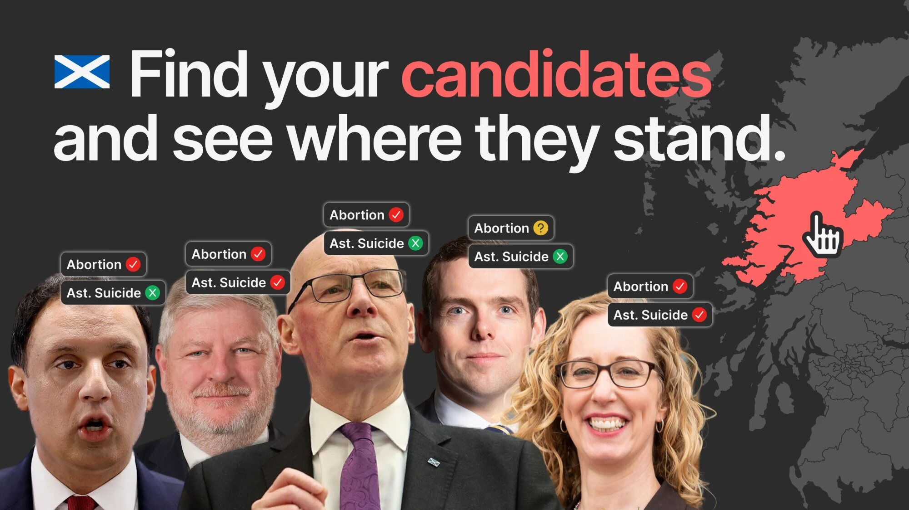
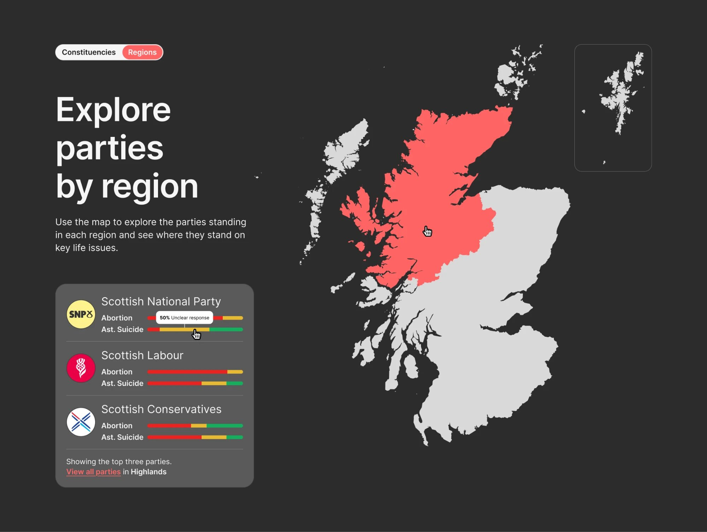
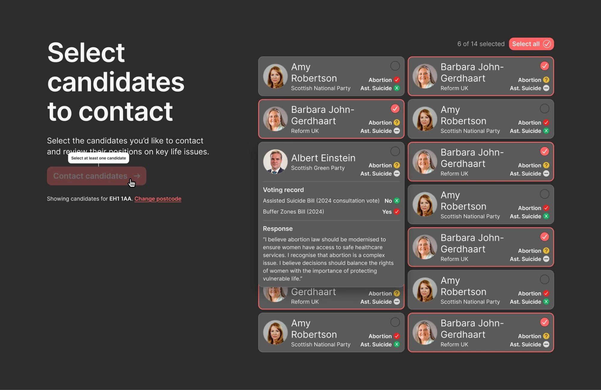
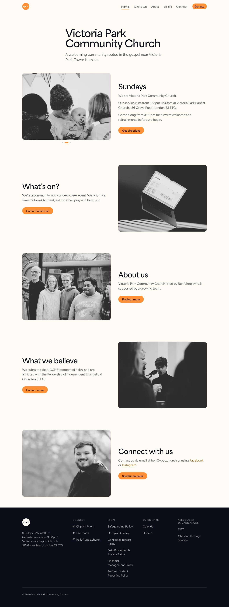
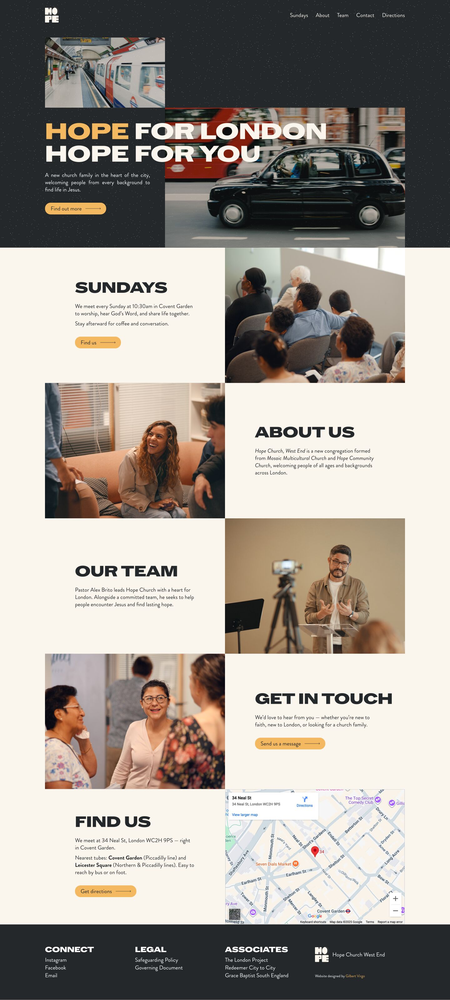

SPUC
Website design and advertising
Three pieces: the advert (16:9) and two desktop page designs, Explore parties by region and Select candidates to contact. No site link anywhere: the links slot in the meta row says what the project was instead. Card colours are taken from the designs (#2C2C2C ground, #FF6464 accent). Discipline line is a guess: correct it.
Same pattern as Christian Heritage London and Highbury: advert first as a flat tile, then each page design in a laptop. The region page is 4:3, taller than the laptop screen, so it drifts slowly down and back like the other captures to show the party panel. Short title “SPUC” with the full name under it, so the heading doesn’t run to four lines.



No sideways scrolling: the region page in a laptop on the left, the advert and the candidate page stacked on the right, everything visible at once like the Stanza card. Cost: the candidate page loses its laptop frame and sits small, so its detail (the voting record panel) is hard to read.
Smallest change: one capture in the closed More work list, beside Victoria Park, Hope Church and AMT, with no link under it. Shows the advert since it reads at thumbnail size; the two page designs aren’t shown. Cost: hidden behind the toggle, and the UI work, the stronger part, is left out.
Website design and advertising

Visual identity and website

Visual identity, website, photography